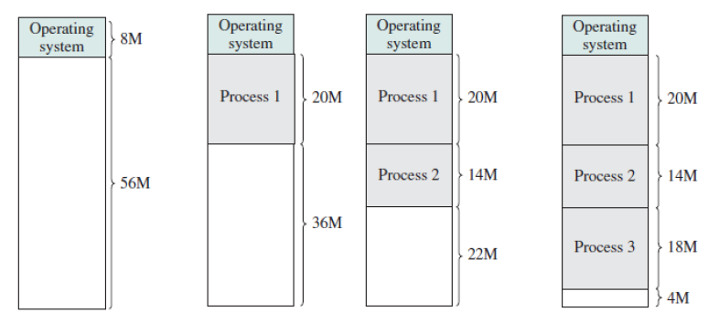
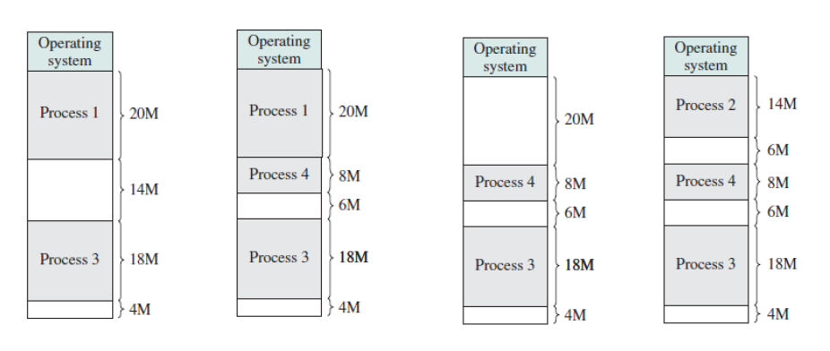
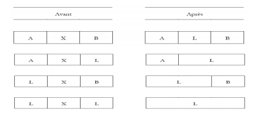

1.Définition et principe
C'est une partie de la technique d'allocation contiguë de la multiprogrammation. Elle est est utilisé pour résoudre le problème posé par le partitionnement fixe. Les partitions ne sont pas créées avant l'exécution ou pendant la configuration du système. Initialement, la RAM est vide et les partitions sont créées pendant l’exécution en fonction des besoins du processus, La taille de la partition sera égale au processus entrant, ce qui permet d'éviter la fragmentation interne et d'assurer une utilisation efficace de la mémoire vive. Le nombre de partitions dans la RAM n’est pas fixe et dépend du nombre de processus entrants et de la taille de la mémoire principale.
 2.Notions à comprendre
a.Fragmentation externe
Au fur et à mesure des opération d'allocation et de désallocation,la mèmoire centrale devient composée d'un ensenble de zones occupées et de zones libres éparpillées dans toutes l'étendue de la mémoire centrale.Ces zones libres peuvent étre chacune trop petites pour permettre l'allocation de nouveaux programmes ,alors que la somme totale de l'espace libre est suffisant : on parle alors de la fragmentation externe
3.Structures intervenants
a.les listes d’etat :
le gestionnaire de la mémoire garde une trace des partitions occupées et des partitions libres. Une solution consiste à maintenir deux listes dont l'une est destinée aux partitions occupées et l'autre aux partitions libres ou chaque élément de la liste contient la taille ,l’adresse début et l’identifiant de la partition.
b.Une file d’attente :
C’est une structure de file contenant les processus chargés par l’utilisateur
4.Etapes d'éxecution
a.la recherche
L’OS cherche dans la liste des partitions libres la partition qui a une taille suffisante pour le processus. Cette opération de recherche suit plusieurs algorithmes d’allocation :


b.le défilement
Si l’OS trouve la partition convenant ou si la taille de processus est supérieur à celle de la mémoire ,il se défile .Sinon le processus reste dans la file
c.l'insertion
-apres le défilement de processus il s’ajoute dans la mémoire centrale dans l’emplacement retourné par l'opération de recherche en créant une nouvelle partition ayant la meme taille de processus
-a la fin de l’insertion son temps d’execution se lance
d.la libération
- La libération se produit quand un processus est évacué(quand le temps d’exécution se termine) de la MC. On marque alors le bloc à libre et on le fusionne éventuellement avec des blocs adjacents.
Supposons que X soit le bloc qui se libère, on a les schémas de fusion suivants :
5.Avantages et inconvénients du partitionnement variable
a.les avantages
-Aucune fragmentation interne.
-Dans la partition variable, l’espace dans la mémoire principale est alloué strictement en fonction des besoins en processus, il n’y a pas donc de cas de fragmentation interne. Il n'y aura plus d'espace inutilisé dans la partition.
-Aucune restriction sur le degré de multiprogrammation : Un plus grand nombre de processus peut être adapté en raison de l'absence de fragmentation interne. Un processus peut être chargé jusqu'à ce que la mémoire ne soit pas vide.
-Aucune limitation sur la taille du processus : Dans le partitionnement fixe, le processus dont la taille est supérieure à la taille de la partition la plus grande n'a pas pu être chargé et le processus ne peut pas être divisé car il n'est pas valide dans la technique d'allocation contiguë. Ici, dans le partitionnement variable, la taille du processus ne peut pas être restreinte car la taille de la partition est déterminée en fonction de la taille du processus.
b.les inconvénients
-Mise en œuvre difficile : Le partitionnement est difficile par rapport au partitionnement fixe car il implique une allocation de mémoire lors de l'exécution plutôt que pendant la configuration du système.
-Fragmentation externe : Il y aura une fragmentation externe malgré l'absence de fragmentation interne.